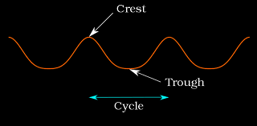
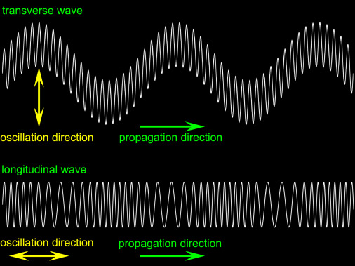

Waves can be classified based on the direction of particle vibration relative to the direction of wave propagation. The two main types are transverse and longitudinal waves.
Transverse Waves
In transverse waves, the medium's particles move up and down as the wave moves forward. This movement creates alternating high and low points along the wave:
- Crest: The highest point of the wave above the rest position.
- Trough: The lowest point of the wave below the rest position.
- Particles of the medium vibrate perpendicular to the direction in which the wave travels.
- Have clearly defined crests (high points) and troughs (low points).
- Examples include:
- Water waves
- Electromagnetic waves (light, radio waves, X-rays)
- Waves on a stretched string
- Can be polarized (vibrations can be restricted to a single plane).

Longitudinal Waves
In longitudinal waves, the particles of the medium vibrate back and forth along the same direction that the wave travels. This creates alternating regions of:
- Compression: A region where particles are close together, resulting in high pressure.
- Rarefaction: A region where particles are spread apart, resulting in low pressure.
- Particles of the medium vibrate parallel to the direction of wave propagation.
- Consist of compressions (regions of high pressure) and rarefactions (regions of low pressure).
- Examples include:
- Sound waves in air
- Seismic P-waves
- Waves in a slinky when compressed and released
- Cannot be polarized.

Summary
| Property |
Transverse Wave |
Longitudinal Wave |
| Direction of particle motion |
Perpendicular to wave direction |
Parallel to wave direction |
| Wave structure |
Crests and troughs |
Compressions and rarefactions |
| Medium requirement |
Can travel in solids, on surfaces, and in electromagnetic form |
Requires a medium (cannot travel in vacuum) |
| Polarization |
Can be polarized |
Cannot be polarized |
| Examples |
Light, water waves, string waves |
Sound, seismic P-waves |

Written by Thenura Dilruk